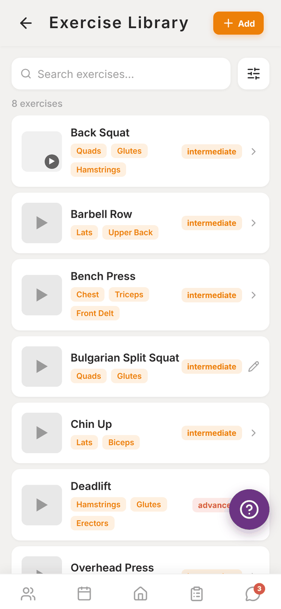
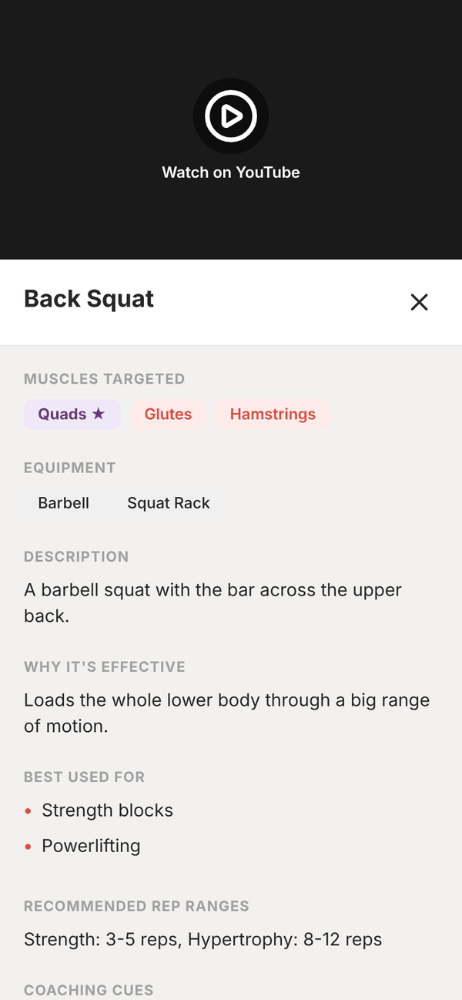
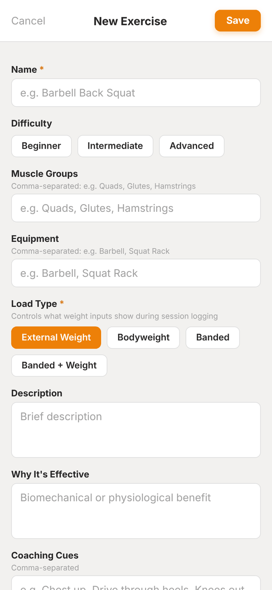

Totality for trainers
The exercise library
Browse and filter every exercise, watch the videos, read the coaching cues, and add your own exercises.
The Exercise Library tile on Home opens every exercise you can use in a programme. It includes Totality's built-in exercises, exercises other trainers have added, and your gym's own exercises (marked Gym).


Find an exercise#
- Type in Search exercises....
- Tap the sliders button to open Filter: Goal (Strength, Hypertrophy, Endurance, Mobility, Power, Rehabilitation), Muscle Group and Equipment. Tap Apply, or Clear all to reset.
Each row shows the name, the main muscles, the difficulty, and a play button when there's a video.
Exercise details#
Tap an exercise to see:
- The video. YouTube videos open with Watch on YouTube.
- Muscles Targeted and equipment.
- Description and Why It's Effective.
- Best Used For.
- Recommended Rep Ranges.
- Coaching Cues.
Clients see the same cues and video when they train, so it's worth filling these in on your own exercises.
Add your own exercise#
- Tap Add at the top.
- Enter a Name, then pick Difficulty.
- Type the Muscle Groups and Equipment, comma separated.
- Pick the Load Type: External Weight, Bodyweight, Banded, or Banded + Weight. This controls what weight boxes the client sees when logging.
- Fill in Description, Why It's Effective, Coaching Cues, Recommended Rep Ranges, Goals and Use Cases as much as you like.
- Under Exercise Video, tap Upload Video (under 50MB) or paste a YouTube link.
- Tap Save.

Exercises you add join the shared library, so other Totality trainers can use them too. You can edit the ones you created (they show a pencil). You can't delete exercises. If you need one removed, email admintotality@gmail.com.
Questions#
Can I edit a built-in exercise?
No. You can only edit exercises you created. Create your own version with your own cues if you want something different.
Which video formats work?
Any video file under 50MB, or a YouTube link.
Can clients browse the library?
Yes. Clients have an exercise library in their own app, and they see each exercise's cues and video when they train.